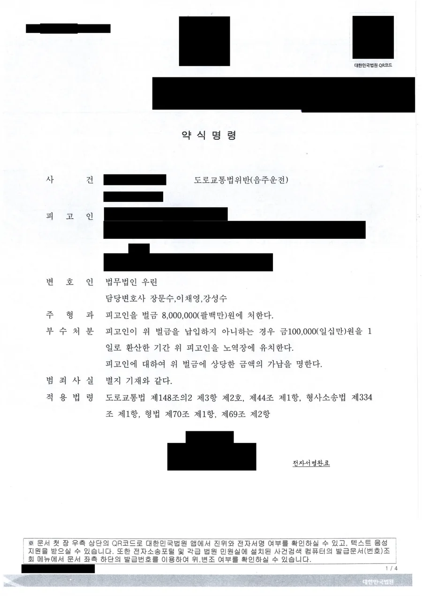

핵심 결과
음주운전으로 조사를 받으면 두 갈래로 갈립니다.
정식으로 기소되어 법정에 서거나, 서류만으로 벌금이 정해지는 약식명령을 받거나입니다.
이 사건은 혈중알코올농도 0.132%에 운전 거리도 약 20km였습니다.
수치와 거리만 보면 가볍지 않은 사안이었습니다.
그럼에도 법정에 서지 않고 벌금 800만 원의 약식명령으로 마무리됐습니다.
이 글에서는 약식명령을 받았을 때 정식재판을 청구할지 판단하는 기준을 함께 정리합니다.
| 구분 | 내용 |
|---|---|
| 사건 분야 | 도로교통법위반(음주운전) |
| 혈중알코올농도 | 0.132% (면허취소 구간) |
| 운전 거리 | 약 20km |
| 처리 방식 | 정식기소가 아닌 약식명령 |
| 적용 법조 | 도로교통법 제148조의2 제3항 제2호, 제44조 제1항 |
| 최종 결과 | 벌금 800만 원 (미납 시 10만 원을 1일로 환산해 노역장 유치) |
어떤 사건이었나
의뢰인은 술을 마신 상태로 운전대를 잡았습니다.
한 지역에서 다른 지역까지 약 20km 구간을 운전했습니다.
단속 당시 측정된 혈중알코올농도는 0.132%였습니다.
면허취소 기준인 0.08%를 훌쩍 넘는 수치입니다.
사고는 없었고, 사람이 다치지도 않았습니다.
법원은 약식명령으로 벌금 800만 원을 정했습니다.
벌금을 내지 않으면 10만 원을 1일로 환산한 기간 노역장에 유치한다는 부수처분이 함께 붙었습니다.
혈중알코올농도에 따라 처벌이 어떻게 갈리나요
도로교통법 제148조의2 제3항이 수치 구간별로 법정형을 나누어 두고 있습니다.
이 사건의 0.132%는 0.08% 이상 0.2% 미만 구간에 해당해 제2호가 적용됐습니다.
수치가 올라갈수록 법정형이 올라가고, 0.2%를 넘으면 구간이 다시 달라집니다.
다만 수치만으로 결과가 정해지지는 않습니다.
운전 거리, 운전한 도로의 성격, 사고 유무, 전력이 함께 반영됩니다.
이 사건에서 약 20km라는 거리는 분명한 불리 요소였습니다.
| 결과를 가르는 요소 | 설명 |
|---|---|
| 혈중알코올농도 | 구간에 따라 적용 법조와 법정형이 달라집니다 |
| 운전 거리 | 짧은 이동과 장거리 운전은 위험성 평가가 다릅니다 |
| 사고 유무 | 사람이 다치면 교통사고처리 특례법이 함께 적용됩니다 |
| 전력 | 10년 내 재범이면 별도의 가중 조항이 적용됩니다 |
같은 수치라도 사고가 있었는지, 전력이 있는지에 따라 벌금과 실형으로 갈립니다.
약식명령을 받으면 그냥 벌금을 내면 되나요
받아들일지, 정식재판을 청구할지 7일 안에 결정해야 합니다.
약식명령서를 송달받은 날부터 7일 이내에 정식재판을 청구할 수 있습니다.
이 기간이 지나면 약식명령은 확정판결과 같은 효력을 갖습니다.
여기서 중요한 것이 하나 있습니다.
정식재판을 청구했다고 해서 형이 가벼워진다는 보장은 없습니다.
형사소송법 제457조의2는 피고인이 정식재판을 청구한 사건에서 약식명령의 형보다 무거운 종류의 형을 선고하지 못하도록 하고 있습니다.
즉 벌금이 징역으로 바뀌지는 않습니다.
그러나 같은 벌금형 안에서 액수가 올라가는 것은 가능합니다.
이 점을 모르고 청구했다가 벌금이 늘어나는 경우가 실제로 있습니다.
| 정식재판 청구를 고려할 만한 경우 | 설명 |
|---|---|
| 사실관계 자체를 다투는 경우 | 운전 사실이나 측정 절차에 다툴 여지가 있을 때 |
| 측정 절차에 문제가 있는 경우 | 채혈 요구, 측정 방법, 고지 절차에 하자가 있을 때 |
| 벌금이 납부 능력을 크게 넘는 경우 | 노역장 유치가 현실이 되는 상황일 때 |
| 양형 자료를 제출하지 못한 경우 | 조사 단계에서 제출하지 못한 사정이 있을 때 |
반대로 사실관계를 다투지 않고 특별한 양형 자료도 없다면, 정식재판 청구는 실익이 적고 벌금이 오를 위험만 남습니다.
벌금을 한 번에 내기 어렵다면
노역장 유치를 그대로 받아들이기 전에 확인할 것이 있습니다.
벌금은 분할납부와 납부연기를 신청할 수 있습니다.
검찰청에 신청하며, 소득과 재산 상황을 소명해야 합니다.
사회봉사로 대체하는 제도도 있습니다.
벌금 미납자의 사회봉사 집행에 관한 특례법에 따라 일정 금액 이하의 벌금에 대해 신청할 수 있습니다.
신청 기간이 정해져 있으므로, 벌금을 낼 수 없다고 판단되면 미루지 말고 확인해야 합니다.
형사와 별개로 면허는 어떻게 되나요
형사절차와 행정절차는 별도로 진행됩니다.
혈중알코올농도 0.08% 이상이면 면허는 취소됩니다.
벌금형을 받았다고 해서 면허 처분이 가벼워지지 않습니다.
면허 처분에 다툴 여지가 있다면 이의신청이나 행정심판을 해야 하는데, 각각 기한이 정해져 있습니다.
형사 대응에만 신경 쓰다 이 기한을 놓치는 경우가 많습니다.
자주 묻는 질문
| 질문 | 답변 |
|---|---|
| 약식명령과 벌금형 판결은 다른가요? | 약식명령은 법정에 서지 않고 서류만으로 벌금이 정해지는 절차이며, 확정되면 판결과 같은 효력을 가집니다. |
| 정식재판을 청구하면 형이 무거워지나요? | 형의 종류는 무거워질 수 없지만, 같은 벌금형 안에서 액수가 올라갈 수 있습니다. |
| 정식재판 청구 기간은 언제까지인가요? | 약식명령을 송달받은 날부터 7일 이내입니다. |
| 벌금을 못 내면 어떻게 되나요? | 노역장에 유치되지만, 분할납부·납부연기·사회봉사 대체를 신청할 수 있습니다. |
| 혈중알코올농도 0.132%면 면허는 어떻게 되나요? | 0.08% 이상이므로 취소 처분 대상이며 결격기간이 적용됩니다. |
| 사고가 없으면 벌금으로 끝나나요? | 사고와 전력이 없다면 벌금형 가능성이 있지만, 거리와 수치에 따라 달라집니다. |
결론
음주운전 사건에서 약식명령은 나쁜 결과가 아닙니다.
법정에 서지 않고 벌금으로 정리된다는 뜻이기 때문입니다.
문제는 그다음입니다.
7일이라는 짧은 기간 안에 받아들일지 다툴지를 정해야 하고, 잘못 판단하면 벌금만 늘어납니다.
여기에 면허 처분은 별도로 굴러갑니다.
두 절차의 기한을 같이 놓고 판단해야 합니다.
본 사례는 의뢰인 보호를 위해 일부 내용을 각색했으며, 처분 결과와 벌금액은 실제와 같습니다.
사무장·상담실장 없이 변호사가 직접 상담합니다
약식명령을 받으셨다면 남은 시간은 7일입니다.
정식재판을 청구할 실익이 있는지, 오히려 불리해지지는 않는지 먼저 판단해야 합니다.
강성수 변호사가 직접 상담하고, 수사 단계 대응부터 양형자료 준비, 면허 구제 절차까지 함께 검토합니다.
약식명령서를 받으셨거나 조사를 앞두고 계시다면, 지금 남은 기한부터 확인해야 합니다.
이 글은 일반적인 법률 정보 제공을 위한 자료이며, 개별 사건의 결과를 보장하지 않습니다. 구체적인 대응은 사실관계와 증거에 따라 달라질 수 있습니다.